Como os outros Menssageiros Fatui, Scaramouche recebeu o nome de um personagem padrão da commedia dell'arte, um tipo de comédia teatral italiana. Nas peças originais, Scaramouche é representado como um personagem astuto com uma variedade de traços de vilão, comumente visto como não confiável com uma mente intrigada.

De acordo com Viktor, Scaramouche não é apreciado entre os Fatui, mesmo entre os outros Harbingers.
Scaramouche faz várias referências à música de 1975 do Queen, "Bohemian Rhapsody":
A letra "Raio e relâmpago, muito, muito assustador" pode se referir à nação Inazuma, origem de Scaramouche.
A maneira como Scaramouche questiona sobre as estrelas e o céu em "Estrelas que não voltam" como uma 'farsa gigante' e uma 'mentira' durante o quarto ato do evento "Estrelas que não voltam" pode ser uma referência à letra de abertura da música "Essa é a vida real?? Isso é apenas fantasia?".
O tema de Scaramouche que toca em sua primeira aparição é apropriadamente intitulado "Ominous Fandango", uma referência à letra "Scaramouche, Scaramouche, você fará o Fandango?".
Beelzebub (também escrito Beelzebul, também o título da Arconte Electro) é mencionado várias vezes nas letras e a Arconte Electro (Beelzebul) também é a criadora de Scaramouche. A forma como as letras se referem a alguém como "mamãe" pode ser uma referência a Beelzebul ser a criadora de Scaramouche.
O drip marketing de Scaramouche, Andarilho, foi lançado no mesmo dia do lançamento de "Bohemian Rhapsody".